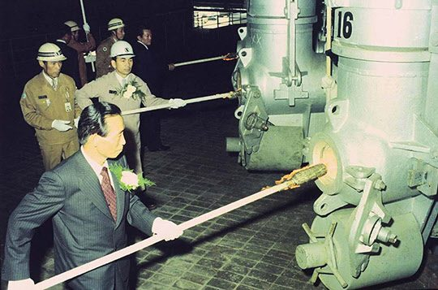

연재일 2014-07-21출처 조선일보 프리미엄조선 연재
<프롤로그> 왜 위대한 만남인가?(下)
1917년에 태어나 1979년에 생을 마친 박정희, 1927년에 태어나 2011년에 생을 마친 박태준. 십 년 차이로 이 험난한 땅에 태어나 공동의 운명을 짊어지고 서로의 고투를 감당한 뒤 32년 격차를 두고 각자 이 세상을 하직했으나, 늦게 떠난 이가 앞서 떠난 이와 맺었던 시대적 대의를 생의 최후 순간까지 지켜냄으로써 ‘영원한 동지’가 된 박정희와 박태준.
두 인물의 만남이 ‘위대한 만남’으로 거듭난 근거를 경제학적 계량화로도 증명할 수 있다. 1987년 9월 서울대학교 사회과학연구소가 수행한 『포항종합제철의 국민경제기여 및 기업문화 연구』라는 방대한 연구서(총 1,137쪽)에서 딱 하나만 살펴보아도 박정희가 왜 그토록 종합제철 건설에 대한 의지와 집념을 불태웠고 박태준이 왜 그토록 포항제철의 성공을 위해 강렬한 열정과 신념으로 목숨까지 걸었던가에 대한 이해력을 높일 수 있을 것이다.
<만일 국내 수요가들이 포항제철 제품을 구입하는 대신 전량 수입했을 경우의 수입액에 대한 비용절감액을 보면 1979년에는 25.6%, 1982년에는 42.0%, 그리고 1985년에는 33.9%이어서 무려 예상 지출액의 3분의 1이나 됨을 알 수 있다. 즉 이 기간 중 국내 철강수요가들은 포항제철 제품을 구입함으로써 약 3분의 1을 절약한 셈이 된다. 포항제철이 그 설립 이래 우리나라 철강 관련 산업의 생산원가를 크게 낮춤으로써 우리나라 경제발전에 공헌한 바가 얼마나 큰지 짐작할 수 있다.>
포항제철이 이른바 ‘무(無)’라고 불린 악조건을 극복하며 ‘양질의 철강제품을 안정적으로 국제철강가격보다 30% 내지 40% 저렴한 가격’에 공급하지 못했다고 가정한다면, 한국의 자동차산업도 조선산업도 전자산업도 오늘날의 영광을 누리기는 어려웠을 것이다. 철(鐵)과 깊은 연관을 맺은 모든 한국의 산업들이 오늘날과 같은 두각을 나타낼 수 없었을 것이다.
또한 국제시세보다 저렴하게 철강을 공급한 포항제철이 바로 그만큼 적자를 냈다고 가정한다면, 그렇게 하고도 경이로운 흑자를 내지 못했다고 가정한다면, 세계 최고라 불려온 포스코의 영광은 아예 불가능했을 것이다.

그러나 박정희와 박태준의 인연 앞에 ‘위대한’이라는 말을 시들지 않을 꽃다발처럼 놓는 뜻은 단순히 국가경제와 국민생활에 기여한 크기에 대한 기억의 예의가 아니다. 포스코를 개인이나 가문의 기업이 아니라 가장 훌륭한 민족기업, 국민기업으로 육성했음에도 불구하고 어마어마한 열매들의 단 하나도 사적 소유로 만들지 않았다는 정신적이고 윤리적인 고결성에 대한 경의(敬意)의 예의이다.
박정희가 비극적으로 생을 마친 날로부터 무려 32년이 더 흐른 2011년 9월, 박태준은 포항제철 초창기 현장 직원들 380명과 다시 만나는 시간을 마련했다.
“보고 싶었소.”
“뵙고 싶었습니다”.
해후의 자리는 곧 눈물의 호수로 변했고, 그의 마지막 공식 연설이 이어졌다. 박태준은 84세의 노쇠한 몸으로도 동지들과 후배들에게 박정희 대통령의 일념과 기획과 의지에 의해 포철이 탄생했다는 사실, 자신에게 보내준 그분의 완전한 신뢰, 모든 정치적 외풍을 막아준 그분의 울타리 역할 등을 결코 망각하지 말아야 한다고 당부했다.
박정희가 박태준을 전적으로 신뢰하며 정치적 외풍을 막아준 단적인 증거는 1970년 2월에 생긴 이른바 ‘종이마패’일 것이다. 불법정치자금을 뜯기지 않으려는, 설비구매의 잘못된 관료주의를 타파하려는 박태준에게 박정희는 암행어사 마패와 같은 것을 선물했다. 박태준은 그것을 한 번도 쓰지 않았지만…….
박정희가 서거한 뒤 박태준은 13년을 더 포스코를 이끌어 제철보국의 원대한 꿈을 이루었다. 스스로 울타리 역할까지 해내면서 기어코 박정희와의 약속을 지켜냈다. 포스코의 대성공(제철혁명)은 한국 산업화의 견인차가 되었다. 제철혁명은 산업혁명과 안보혁명의 하위개념이지만, 제철혁명이 성공하여 산업혁명과 안보혁명을 뒷받침할 수 있었다. 또한 산업화 성공은 민주화 성장의 물적 토대를 제공했다.
박정희의 혜안이 없었다면 포스코의 박태준은 없었고, 박정희와 박태준의 독특한 인간관계(완전한 신뢰관계)가 없었거나 박태준이 없었다면 제철혁명의 대하드라마는 대성취를 거둘 수 없었다. 그리고 박태준은 박정희 서거 후 한결같은 마음으로 그 인간관계를 아름답게 가꾸었다.
학자들은 박태준의 정신을 무사심(無私心)과 순명(殉命)의 애국주의로 규명했다. ‘박정희와의 약속’은 박태준의 일생에서 꼿꼿한 척추였다. 가령, 이런 장면을 보자. 2003년 가을, 광양. 박태준과 그의 평전 작가는 막걸리로 반주 삼으며 긴 대화를 나누고 있었다. 문득 박태준이 말했다.
“내가 포스코에서 딴생각을 했다? 그러면 죽어서 박 대통령과 만났을 때 창피해서 이거 한 잔 나눌 수 있겠소?”
작가를 빤히 쳐다보았지만, 그것은 자기 맹세 같았다. ‘딴생각’은 ‘검은 돈’이고 ‘이거’는 ‘막걸리’였다.
포스코의 주식을 단 한 주도 받지 않은 것으로도 유명한 박태준이 만약 박정희 서거 후에라도 ‘딴생각’을 품었더라면 두 인물의 만남은 ‘위대한 만남’의 종착역에 도달할 수 없었다. 떠난 이의 뜻과 남은 이의 뜻이 끝까지 일치한 점, 이는 ‘위대한 만남’의 화룡점정이다.
2011년 12월 13일 숨을 멈춘 박태준은 32년 전부터 박정희가 기다린 서울 동작동 국립현충원에 안장되었다. 그해 11월 14일 박정희 동상 제막식에 가서 축사할 예정이었으나 정작 당일엔 연세대 세브란스병원 병실에 누워 있었던 박태준. 그의 유고(遺稿)에는 이런 문장이 담겨 있었다.
<그리운 각하, 이제는 저의 인생도 얼마 남지 않았습니다. 우리가 재회하여 막걸리를 나누게 되는 그날, 밀리고 밀린 이야기의 보따리를 풀어놓겠습니다. 며칠은 마셔야 저의 이야기를 어느 정도는 마칠 것 같습니다. 부디 평안히 기다려 주십시오.>
박태준은 이야기 보따리에 포항공과대학교, 포항방사광가속기, 포항산업과학연구원 설립도 담았을 테고, 그 대목에서 박정희는 틀림없이 “임자, 잘 했어”하고 술잔을 집어 들며 즐거이 웃었을 텐데, 과연 박태준의 그 소박한 소망은 이루어졌을까?
그때, 하느님의 귀는 열려 있었을 것이다.
2014년 7월 21일 [프리미엄 조선 연재]